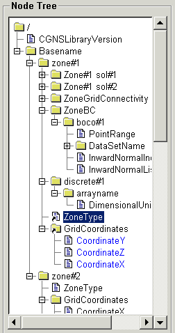
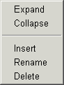

|  | The Node Tree displays the nodes for the currently
loaded file. Terminator nodes (those containing
no children nodes) are indicated with a file icon, Linked nodes are displayed with A bad node will be shown in red
with an Invalid nodes will also be shown in red, with an |
The scrollbars to the right and below the tree may be used to scroll the view.
A node is selected by clicking Mouse Button 1 on the desired node. All the information for the selected node will then be displayed in the Node Description, Link Description, and Data Description panels to the right of the Node Tree. If the size of the node data is less than or equal to the Auto Load Data threshold value, and the Auto Load Data option is enabled, the node data will also be read and displayed in the Node Data panel.
Clicking Mouse Button 1 on a node selects the node.
Double-clicking Mouse Button 1 on a parent node, will toggle the
open state of the node.
Shift-Mouse Button 1 will open one level of nodes below the
selected node.
Shift-Mouse Button 3 will close the last level of open nodes
below the selected node.
Control-Mouse Button 1 will expand all the nodes below the
selected node.
Control-Mouse Button 3 will collapse all the nodes below the
selected node.
Clicking Mouse Button 3 on a node will invoke the popup menu
shown below:
|  |
|
If the focus is set to the Node Tree (indicated by a black box
around the panel), then the following keyboard operations are
available:
| Key | Menu Item | Description |
|---|---|---|
| Down | Move the selection down to the next node. | |
| Up | Move the selection up to the previous node. | |
| Left | Collapse | Close the current node and all of it's children nodes. |
| Right | Expand | Open the current node and all of it's children nodes. |
| Space | toggle open | Toggle the open state for the node. |
| Insert | Insert | Add a new node as a subnode of the current node. An edit field will be created allowing the node name to be specified. |
| Enter | Rename | Change the name of the current node. An edit field will be created allowing the new name to be specified. |
| Delete | Delete | Delete the current node. |